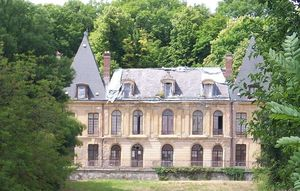
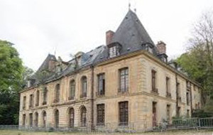
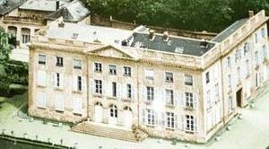
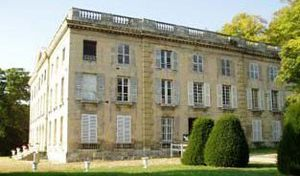
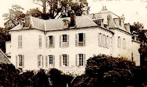

Recensement Jean-Claude Truffet
| Département | 78 — Yvelines |
| Canton | Limay |
| Commune | Limay_Issou |
| Type d'édifice | Château |
| Période d'origine | XVI |





ISSOU, située dans le Nord du département, sur la rive droite de la Seine, Issou est une commune largement urbanisée. Elle est limitrophe de Guitrancourt au nord-ouest, de Porcheville au sud-ouest, de Gargenville à l'est. Au sud, elle est séparée par la Seine de Mézières-sur-Seine. Une première résidence dont il ne reste que peu de traces, est édifiée à la fin du XIVe siècle. La construction du château actuel commence en 1724. La femme de lambassadeur de France à la cour de Suède écrit en 1739 : "Cet endroit est le plus joli du monde, on l'appelle Issou". Acquis en 1750 par le duc de Bouillon, très introduit à la Cour. Issou est une résidence très appréciée. Mme de Pompadour aurait laissé sa devise sur le pigeonnier. Le château se trouvait au centre d'une importante exploitation agricole, dont de nombreux bâtiments subsistent. Il a fait l'objet d'une restauration en 1903, construction rénovée en 1903 dans le style du XVIIIe siècle. Après l'acquisition de la famille Chaperon à la famille du vicomte De Jean (contrairement à la légende locale il n'a pas été offert en cadeau de mariage), il a subi de nombreuses mutations successives. Le duc de Bouillon l'a acquise en 1750, il recevait la marquise de Pompadour qui selon la légende a laissé sa devise sur le pigeonnier rond : « Horace Non Numero Nisi Serenas ». Le château proprement dit date d'environ 1399 il n'en reste quasiment rien, sinon une tour carrée, vestige de l'ancien manoir féodal datant du XVIe siècle et un colombier rond qui ont été rénovés à la fin des années 1990 par l'association C.H.A.M (Chantiers Histoire et Architecture Médiévales).
CELESTINS, le château se dresse à la droite duquel s'élevait la chapelle Sainte-Christine, reliée au château par un cloître. Des parties importantes du château ont été classées en 1970 par le ministère des affaires culturelles. Il s'agit des façades, des toitures du bâtiment principal, des trois pièces décorées du rez-de-chaussée de style empire: hall d'entrée, salle à manger et salon. Situé au pied de la forêt Saint-Sauveur (ex Ermitage Saint-Saveur), le château des Célestins domine la Ville sur son versant Nord.
MOUSSETS, Ernest Chausson, parcourut le château en sifflotant quelques poèmes pour violon ,le célèbre compositeur français qui mourut accidentellement dune chute de vélo dans ce château en 1899. Construit au XVIIe siècle, le château des « Grands Moussets » connut de nombreux changements et remaniements de la part de ses propriétaires successifs : il fut lieu de rassemblement de la confrérie de l'Ermitage Saint-Sauveur à partir du XVIIIe siècle, résidence d'été d'Anne de la Force (favorite de Louis XVIII) avant d'être racheté par le baron Laurent-Atthalin à la toute fin du XIXe siècle. En 1945, le château fut vendu à l'ambassade de l'URSS qui le transforma en maison de repos pour les diplomates soviétiques de Paris. Le château est aujourd'hui la propriété de la Russie.
le duc de Bouillon"
Trois châteaux dans cet article Issou grav-1-2, Celestins grav -3-4 et Mousset_5